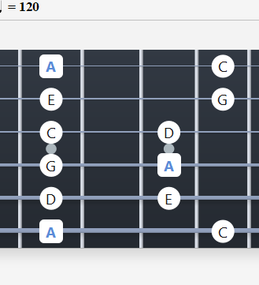
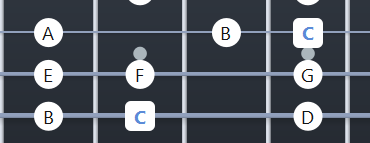
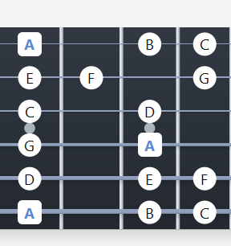

Pentatonska Skala
Pentatonska skala je odličan početak za učenje improvizacije. Sastoji se od 5 nota i koristi se u mnogim muzičkim žanrovima, posebno u bluzu i roku.
Molska Pentatonika (A mol)
Note u skali:
A - C - D - E - G
Pattern u prvoj poziciji:

Durska Skala (Major)
Durska skala je jedna od najvažnijih skala u muzici. Sastoji se od 7 nota i karakteriše je "vedri" zvuk.
C dur skala
Note u skali:
C - D - E - F - G - A - B
Formula: W-W-H-W-W-W-H (W = ceo step, H = polustep)

Molska Skala (Minor)
Prirodna molska skala je srodna durskoj skali i karakteriše je "tamniji" zvuk. Često se koristi u roku i metalu.
A mol skala (prirodni mol)
Note u skali:
A - B - C - D - E - F - G
Formula: W-H-W-W-H-W-W

Saveti za Vežbanje Skala
• Počnite sa pentatonskom skalom u prvoj poziciji
• Vežbajte sporo sa metronomom
• Naučite note na vratu gitare
• Povezujte skale sa poznatim melodijama
Praktična Primena
- Improvizacija i soliranje
- Komponovanje melodija
- Razvoj muzičkog sluha
- Razumevanje harmonije